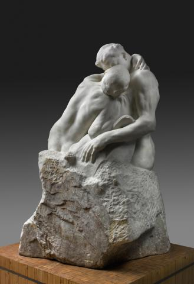
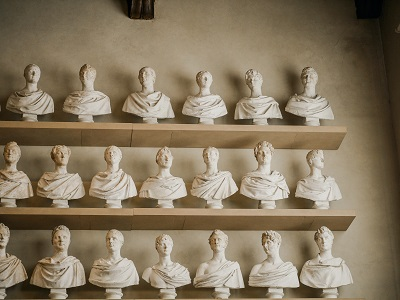
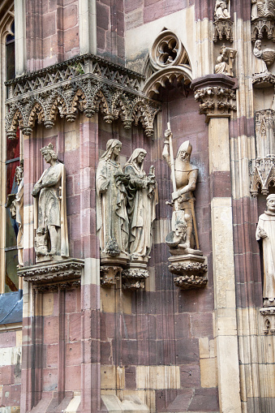

Le Baiser de Rodin
The Kiss (French: Le Baiser) is an 1882 marble sculpture by the French sculptor Auguste Rodin. The embracing nude couple depicted in the sculpture appeared originally as part of a group of reliefs decorating Rodin's monumental bronze portal The Gates of Hell, commissioned for a planned museum of art in Paris. The couple were later removed from the Gates and replaced with another pair of lovers located on the smaller right-hand column.
Differents types of sculpture

Les Rondes-Bosses

Les Bas-Reliefs
